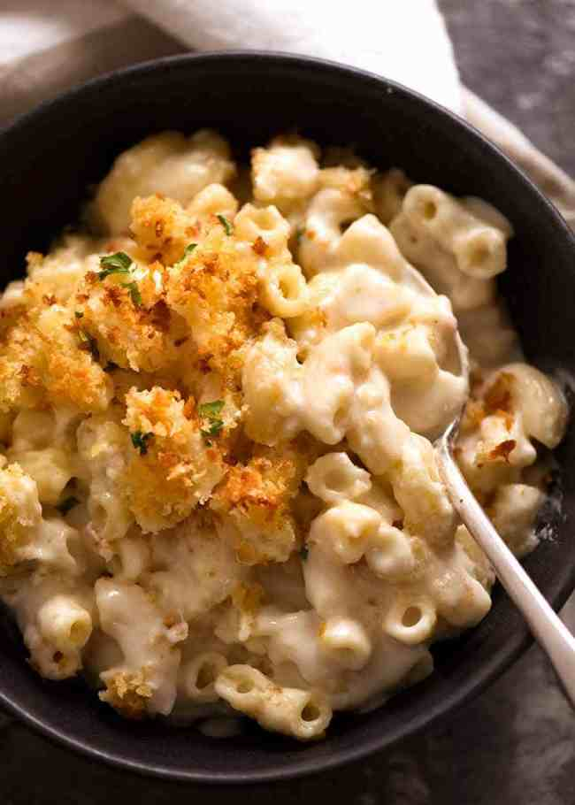

Mac and Cheese

Description
Ingredients
Macaroni
- 250g / 8 oz macaroni (elbow pasta)
- 1 tbsp (15g) unsalted butter (or 2 tsp oil)
Topping
- 2/3 cup panko breadcrumbs
- 2 tbsp (30g) unsalted butter, melted
- 1/4 tsp salt
- 1 tbsp vegetable, canola or olive oil (not extra virgin olive oil)
- 1 cup boiling water
- 2 cups+ vegetable or canola oil, for frying
Sauce
- 4 tbsp (60g) unsalted butter
- 1/3 cup flour, plain / all purpose
- 3 cups milk, warmed (low or full fat)
- 2 cups freshly shredded cheese, preferably gruyere (followed by cheddar and Colby)
- 1 cup freshly shredded mozzarella cheese , or more other cheese of choice
- 3/4 tsp salt
Seasonings (Optional)
- 1 tsp garlic powder
- 1/2 tsp onion powder
- 1/2 tsp mustard powder
Steps
Pasta
- Cook pasta: Bring a large pot of water to the boil. Add macaroni and cook per packet directions MINUS 1 minute.
- Toss in butter: Drain, return pasta to pot, add butter and toss until melted. Set aside to cool while making the
Sauce (Optional - Note 3).
Topping
- Mix together Topping. Set aside.
Sauce
- Preheat oven to 180°C/350°F (all oven types).
- Make roux: In a large saucepan or in an ovenproof skillet (I use my 26cm/9" Lodge cast iron skillet), melt
butter over medium heat. Add flour and cook, stirring constantly, for 1 minute.
- Add milk: Add about 1 cup of the milk and mix to dissolve the paste into the milk. Then add remaining milk and
mix until lump free (use whisk if required).
- Add Seasonings: Mix in salt and Seasonings if using.
- Thicken sauce: Cook, stirring/whisking regularly, for 5 - 8 minutes until thickened to a cream consistency. When
the Sauce coats the back of a wooden spoon, you should be able to draw a path with your finger.
- Add cheese: Remove from stove, add cheese and stir - cheese doesn't need to melt.
- Check salt: Adjust salt to taste (if you use recommended cheeses, you won't need more).
Assembling
- Assemble: Pour Sauce into pot with Macaroni. Stir quickly, then pour back into the skillet (I did this) or a
baking dish (Note 4). Sprinkle with breadcrumb topping.
- Bake for 25 minutes or until top is light golden. Don't bake too long otherwise you'll bake away the Sauce!
- Serve: Serve immediately! I sprinkled mine with a bit of fresh parsley. See notes for best make-ahead method.